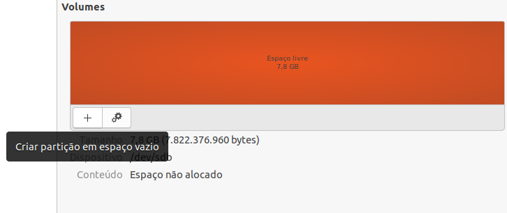

Partitioning the SD Card¶
This guide describes the partitioning process, using a Linux system, of a microSD card in two parts, called boot and rootfs in order to generate a bootable SD card. The procedure described below is performed using the disk manager of Ubuntu itself, it is not necessary to install new software.
Usually, the microSD card is configured in a single partition formatted in the Windows FAT standard, a typical configuration found in cards purchased at retail. However, here we will partition the microSD card into two parts, which will be called boot and rootfs, with the file management system of the boot partition "VFAT" and the rootfs partition "ext4".
The figure below shows an example of a memory card with the partitions already defined, mounted and containing the operating system of the embedded computer. In the example the SD card has a total of 4 GB, however, for the Yocto project, a 2 GB memory card should be enough.

Procedures¶
Warning
The operating system version used in the activities was Ubuntu 20.04 (LTS), however the commands are the same for older versions of Ubuntu, starting with Ubuntu 14.04 (LTS). The procedures may differ depending on the version and distribution of Linux being used.
Insert the microSD card or an adapter with it into an available port on your Linux computer.
Search your computer for an application called Disks and launch it. Upon opening, the application will display the memory devices connected to the computer.

In the Disks tab, select the microSD card you want to partition.

Click "Unmount the file system" below Volumes to enable modifications to the microSD card.
To create new partitions in different formats it is recommended to delete the partition on your microSD card, for this, click on "Delete partition".

Warning
This step will format your microSD card, so all data on it will be permanently deleted.

Click "Create a new partition to create the first partition.
This partition will be named "boot", will have a size of 528MB and will be configured with the file management type "FAT", as shown below. After configuring, click on "Create" to generate this new partition.


Then, go to More Actions> Edit partition, set the Partition type to "W95 FAT32 (LBA)" and activate the option Startable to determine that this partition is where the operating system should be loaded.


Tip
In this example, 528 MB has been reserved for the boot partition, however, less than 100 MB is used for boot. Therefore, if there is a lack of space for data storage in the future, it will be possible to expand the roots partition by redoing this division.
Now we are going to create the second partition, called rootfs. Therefore, select the free space of the SD card and click Create partition in empty space.
This partition will be named "rootfs" and we will allocate all the remaining memory on the SD card to it. This partition will be configured with the "Ext4" file management type, the default file system for current GNU / Linux systems. After configuring, click on "Create" to generate this new partition.

On a successful run, the result will be similar to the figure below, where the procedures were applied to an 8GB card.
(Optional) To reassemble the partitions, just select the partition and click Mount the selected partition. This tool will automatically mount the selected partition to the file system /media/<User_Name>


References¶
Create Bootable MicroSD Card - gumstix.com
Script - Make 2 Partition SD Card - github.com
How to Make 2 Partition SD Card - Texas Instruments Processors Wiki
PITA, H. C. Desenvolvimento de sistema de comunicação multiplataforma para veículos aéreos de asa fixa. Faculdade de Tecnologia, Universidade de Brasília, 2018.